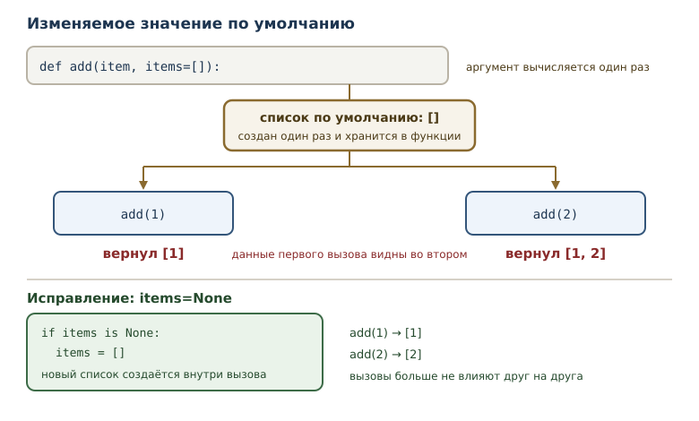
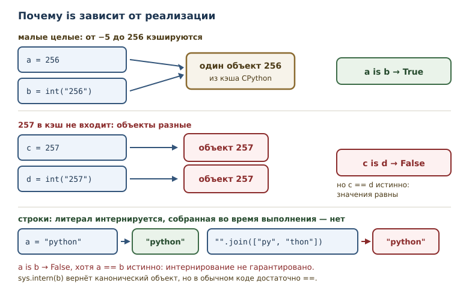

Pythonic-код и типичные ловушки
Идиомы Python, Zen of Python и классические ловушки, на которых спотыкаются даже опытные разработчики.
В этой главе
Код может работать и при этом быть плохим. Он может решать задачу и при этом удивлять читателя, прятать ошибку до определённых данных или повторять то, для чего в языке уже есть понятная конструкция. В предыдущей главе речь шла о стиле: об именах, отступах и docstring. Эта глава о другом слое — об идиомах, которыми пользуются опытные разработчики, и о ловушках, в которые попадают даже они.
50.1 Зачем эта глава
Python ценит читаемость: программа читается людьми чаще, чем пишется.
Идиома Python — устойчивый приём, принятый в сообществе, который
делает код короче и понятнее для того, кто знает язык. for index, item in enumerate(values) вместо ручного счётчика, with вместо ручного
закрытия файла, if value is None вместо сравнения с None через == —
всё это идиомы.
У идиом есть обратная сторона. Тот, кто выучил форму, но не понял смысл,
применяет её не к месту. Ещё хуже — ловушка языка: поведение, которое
кажется очевидным, но устроено иначе. Изменяемое значение по умолчанию
накапливает данные между вызовами; is сравнивает не значения; сумма
0.1 + 0.2 не равна 0.3. Каждая такая ловушка когда-то стоила кому-то
часа отладки.
После этой главы вы сможете:
- объяснять принципы Zen of Python и узнавать их в коде;
- применять основные идиомы и понимать, зачем они нужны;
- распознавать классические ловушки до того, как они проявятся;
- отличать питонический код от просто работающего;
- понимать, когда идиома ухудшает читаемость.
50.2 Zen of Python
Zen of Python — короткий свод принципов дизайна языка, написанный
Тимом Петерсом (PEP 20). Посмотреть его можно командой python -m this.
$ python -m this
The Zen of Python, by Tim Peters
Beautiful is better than ugly.
Explicit is better than implicit.
Simple is better than complex.
Complex is better than complicated.
Flat is better than nested.
Sparse is better than dense.
...
Вывод сокращён; полностью его покажет любой интерпретатор Python.
Пять принципов из этого списка прямо влияют на повседневный код. «Красивое лучше уродливого» — оформление не украшение, а часть восприятия. «Явное лучше неявного» — не прячьте важное поведение за магией. «Простое лучше сложного» — не решайте задачу конструкцией посложнее, если хватает простой. «Плоское лучше вложенного» — глубокая вложенность условий хуже последовательности проверок. «Читаемость имеет значение» — главный критерий выбора между двумя работающими решениями.
Есть и ещё один принцип, о котором вспоминают реже: «ошибки не должны
замалчиваться без явного намерения». Он объясняет, почему except Exception: pass считается плохим кодом, даже если программа продолжает
работать.
50.3 Идиомы Python
Идиома экономит не только строки, но и внимание читателя: знакомый шаблон распознаётся сразу, без разбора деталей. Ниже — приёмы, которые встречаются в любом профессиональном коде.
enumerate и zip
Когда нужны и элементы, и их позиции, вместо ручного счётчика
используют enumerate.
letters = ["a", "b"]
for position, letter in enumerate(letters, start=1):
print(position, letter)
1 a
2 b
zip соединяет несколько последовательностей поэлементно.
names = ["a", "b"]
ages = [30, 25]
for name, age in zip(names, ages):
print(name, age)
a 30
b 25
zip останавливается на самой короткой последовательности. Если
разная длина — признак ошибки данных, включите strict=True: тогда
несовпадение длин даст ValueError вместо молчаливого усечения.
is None
Для проверки на None принято использовать is, а не ==: None —
единственный объект своего типа, и сравнение идентичности точнее
выражает намерение.
value = None
print(value is None)
print(value is not None)
True
False
f-строки
Вместо склейки через + и str() используйте f-строки: они короче и
позволяют управлять форматом.
name = "мир"
count = 3
print(f"привет, {name}! раз: {count}")
print(f"{name!r}")
print(f"{count:03d}")
привет, мир! раз: 3
'мир'
003
dict.get и setdefault
get возвращает значение по ключу или значение по умолчанию, не
поднимая KeyError.
config = {"host": "localhost"}
print(config.get("port"))
print(config.get("port", 8080))
None
8080
Подсчёт вхождений через get — классическая идиома.
text = "раз два раз"
counts = {}
for word in text.split():
counts[word] = counts.get(word, 0) + 1
print(counts)
{'раз': 2, 'два': 1}
with
Инструкция with гарантирует освобождение ресурса, даже если внутри
блока произошло исключение. Файл закрывается автоматически.
with open("note.txt", "w", encoding="utf-8") as file:
file.write("привет")
with open("note.txt", encoding="utf-8") as file:
text = file.read()
print(text)
привет
Ручная пара open/close требует try/finally и легко забывается.
with выражает намерение короче и надёжнее.
включения
Списковое включение заменяет цикл с append, когда нужно получить новый
список.
squares = [number ** 2 for number in range(1, 6)]
print(squares)
evens = [number for number in range(10) if number % 2 == 0]
print(evens)
[1, 4, 9, 16, 25]
[0, 2, 4, 6, 8]
Словарное включение строит словарь по правилу.
prices = {"a": 100, "b": 200}
print({name: price * 2 for name, price in prices.items()})
{'a': 200, 'b': 400}
распаковка
Распаковка заменяет серию присваиваний по индексам.
first, *rest = [1, 2, 3, 4]
print(first, rest)
a, b = 1, 2
a, b = b, a
print(a, b)
1 [2, 3, 4]
2 1
for ... else
Ветвь else цикла выполняется, если цикл завершился без break. Это
избавляет от флага «нашли или нет».
for number in [4, 7, 8]:
if number % 2:
print("нашли нечётное:", number)
break
else:
print("все чётные")
нашли нечётное: 7
Читается как «для всех чисел: если нашли — стоп; иначе — сообщить». Без
else понадобилась бы переменная-флаг и проверка после цикла.
50.4 Ловушки языка
Ловушка языка — поведение, которое противоречит интуиции, но входит в семантику Python. Ловушки не случайны: у каждой есть причина. Проблема в том, что причина видна не сразу, а последствия проявляются позже.
Изменяемое значение по умолчанию
Аргумент по умолчанию вычисляется один раз — при создании функции. Если это изменяемый объект, он сохраняется между вызовами.
def add(item, items=[]):
items.append(item)
return items
print(add(1))
print(add(2))
print(add(3))
[1]
[1, 2]
[1, 2, 3]
Ожидалось, что каждый вызов начнёт с пустого списка, но список один и тот же. Ловушка особенно опасна в библиотечном коде: данные «протекают» из одного вызова в другой.

Правильная идиома — None как признак «аргумент не передан».
def add(item, items=None):
if items is None:
items = []
items.append(item)
return items
print(add(1))
print(add(2))
print(add(3, [10]))
[1]
[2]
[10, 3]
Теперь каждый вызов без аргумента получает новый список. Обратите внимание на третий вызов: переданный список изменяется на месте — это нормальное поведение, если функция явно обещает дополнить переданный объект.
is и ==
Оператор == сравнивает значения, is — идентичность, то есть тот ли
это объект. Для чисел и строк разница незаметна, пока не посмотришь на
внутреннее устройство.
a = [1, 2]
b = [1, 2]
print(a == b)
print(a is b)
True
False
Два списка содержат одинаковые значения, но это разные объекты. Для
None, True и False идентичность совпадает с единственностью
объекта, поэтому is None корректен. Для чисел и строк is зависит от
деталей реализации — и это ловушка.
Кэш малых целых
CPython хранит заранее созданные объекты для целых чисел от −5 до 256.
Такие числа не создаются заново: 256 из любого места программы — это
один и тот же объект.
a = 256
b = int("256")
print(a is b)
c = 257
d = int("257")
print(c is d)
print(c == d)
True
False
True
Граница 256 — особенность CPython, а не гарантия языка. В другой
реализации Python результат is может отличаться. Поэтому сравнивать
числа через is нельзя: только ==.

Интернирование строк
Интернирование строк — повторное использование одного объекта для одинаковых строк. Литералы, встречающиеся в коде, обычно интернируются автоматически, а строки, собранные во время выполнения, — нет.
import sys
a = "python"
b = "".join(["py", "thon"])
print(a == b)
print(a is b)
print(a is sys.intern(b))
True
False
True
sys.intern возвращает канонический объект строки. Но опираться на
идентичность строк в обычном коде не нужно: для сравнения текста есть
==.
bool как подкласс int
bool — подкласс int: True равен 1, False равен 0. Это удобно для
подсчётов и опасно для логики.
flags = [True, True, False]
print(sum(flags))
print(isinstance(True, int))
print(True == 1)
2
True
True
Сумма флагов даёт число истинных. Но обратное неверно: число 2 — не
True, а bool(2) — True. Если функция обещает вернуть флаг, не
возвращайте из неё счётчик: читатель запутается.
Запятая в одноэлементном кортеже
Запятая в одноэлементном кортеже — обязательный элемент записи
(value,). Без запятой скобки не создают кортеж.
print(type((1)).__name__)
print(type((1,)).__name__)
int
tuple
Ловушка проявляется в возврате значений и в преобразованиях.
def items():
return [1]
value = items(),
print(type(value).__name__, len(value))
print(value)
tuple 1
([1],)
Здесь кортеж создан запятой после вызова, а не круглыми скобками. Ошибка на единицу в структуре данных обнаруживается далеко от места возникновения — типичный признак ловушки.
Ловушка сравнения float
Ловушка сравнения float — прямое сравнение чисел с плавающей точкой
через == почти всегда неверно: двоичное представление не хранит
десятичные дроби точно.
from math import isclose
print(0.1 + 0.2 == 0.3)
print(isclose(0.1 + 0.2, 0.3))
print(round(0.1 + 0.2, 1) == 0.3)
False
True
True
isclose сравнивает с допуском и подходит для большинства задач.
Округление тоже работает, но требует понимать, сколько знаков нужно.
Для денег и точных расчётов используют целые единицы (копейки) или
decimal.Decimal.
Сортировка строк и locale
Сортировка строк идёт по кодовым точкам, а не по правилам языка.
Заглавные буквы оказываются раньше строчных, а ё — после я.
words = ["Zebra", "apple"]
print(sorted(words))
print(sorted(words, key=str.lower))
['Zebra', 'apple']
['apple', 'Zebra']
Ключ сортировки str.lower даёт порядок без учёта регистра. Полное
соблюдение алфавита конкретного языка требует locale.strxfrm и
настройки локали; поведение зависит от системы, поэтому в переносимом
коде его применяют осознанно.
Конкатенация строк в цикле
Склейка строк через += в цикле создаёт новую строку на каждом шаге:
строки неизменяемы. На больших данных это заметно медленно.
parts = ["2026", "01", "31"]
date = "-".join(parts)
print(date)
2026-01-31
Идиома — собрать части в список и соединить один раз через join.
Такой код и быстрее, и яснее: видно, что строится строка из фрагментов
с разделителем.
50.5 Питонический или просто работающий
Питонический код — не тот, где использовано больше идиом, а тот, где решение понятно с первого чтения. Три вопроса помогают отличить одно от другого.
Первый: видно ли намерение? [x for x in values if x] читается как
«все истинные значения». Вложенное включение из трёх циклов читается
хуже обычного for.
Второй: нет ли скрытых эффектов? Включение с append внутри создаёт
список ради побочного эффекта. Это работает, но обманывает ожидание:
включение должно строить значение, а не менять чужой объект.
Третий: не нарушает ли идиома границы? Короткое замыкание and/or
удобно, но value = user or default скрывает разницу между «нет
значения» и «пустое значение». Явная проверка длиннее, зато честнее.
Идиома — инструмент, а не цель. Если она делает код непонятным для команды, лучше написать длиннее и проще. Стиль служит читателю, а не наоборот.
50.6 Типичные ошибки
Изменяемый аргумент по умолчанию. def f(x=[]) накапливает данные
между вызовами. Используйте None и создавайте объект внутри.
Сравнение через is для значений. is проверяет идентичность;
результат зависит от реализации. Для чисел и строк нужен ==.
Ожидание, что is покажет равенство. Это разные вопросы: «тот же
объект» и «такое же значение».
Забытая запятая в кортеже. (1) — число; кортеж из одного элемента —
(1,).
Прямое сравнение float. 0.1 + 0.2 == 0.3 ложно. Используйте
isclose или целые единицы.
Сортировка строк без ключа. Заглавные и строчные буквы перемешаны,
ё стоит не там, где ожидает читатель. Задайте key.
Склейка строк в цикле. result += fragment на большом объёме
медленно. Собирайте части и используйте join.
Идиома ради идиомы. Вложенные включения и цепочки and/or
усложняют чтение. Простое явное решение предпочтительнее.
50.7 Упражнения
1. Прогнозирование is и ==
Не запуская код, предскажите вывод. Затем проверьте и объясните результат.
a = "python"
b = "".join(["py", "thon"])
print(a == b)
print(a is b)
2. Исправление изменяемого значения по умолчанию
Функция ниже накапливает элементы между вызовами:
def collect(item, items=[]):
items.append(item)
return items
Перепишите её так, чтобы каждый вызов без второго аргумента начинал с пустого списка. Покажите работу на трёх вызовах.
3. enumerate вместо счётчика
Перепишите цикл так, чтобы позиции считались идиоматично и начинались с 1.
words = ["раз", "два", "три"]
index = 0
for word in words:
index += 1
print(index, word)
4. zip и строгая проверка
Соедините имена и возрасты через zip. Сначала покажите поведение при
разной длине без strict, затем — с strict=True и объясните
исключение.
5. dict.get для подсчёта
Подсчитайте частоты слов в строке "раз два раз три раз" через
dict.get, не используя try/except.
6. for ... else
Напишите цикл, который ищет первое нечётное число в списке и сообщает
"все чётные", если такого нет. Используйте ветвь else цикла, без
переменной-флага.
7. Запятая в кортеже
Объясните, почему функция возвращает не то, что ожидалось:
def one():
return [1]
value = one(),
print(type(value).__name__, len(value))
Исправьте код так, чтобы value было списком.
8. Сравнение float
Проверьте, равны ли 0.1 + 0.2 и 0.3. Затем сравните их через
math.isclose. Объясните, почему результаты различаются и какой способ
выбрать для денежных расчётов.
9. Сортировка без учёта регистра
Отсортируйте ["Zebra", "apple", "Banana"] двумя способами: по кодовым
точкам и без учёта регистра. Объясните разницу и что произойдёт с
русскими словами.
10. Мини-задача: питоническая сводка
Дан список слов. Напишите функцию, которая возвращает словарь «слово →
количество вхождений», а затем список слов, встречающихся больше одного
раза. Используйте get, словарное включение и включение с условием.
Объясните, почему выбранные идиомы делают код понятнее.
50.8 Проверка понимания
- Что означает «питонический код» и почему это не то же самое, что «код, который работает»?
- Какой принцип Zen of Python объясняет вред
except Exception: pass? - Почему изменяемое значение по умолчанию сохраняется между вызовами?
- Чем
isотличается от==и почему для чисел и строк нужен второй? - Почему
256 is int("256")истинно, а257 is int("257")ложно в CPython? - Что такое интернирование строк и почему на него нельзя опираться?
- Почему
(1)— не кортеж? - Почему прямое сравнение float через
==почти всегда неверно? - Когда идиома ухудшает читаемость?
50.9 Что дальше
Вы научились писать идиоматичный код и обходить классические ловушки. Следующая тема — регулярные выражения: язык шаблонов для поиска и разбора текста, который заменяет длинные цепочки условий и методов строк. Об этом — в главе о регулярных выражениях.